橋한국
한국이재명 정부 2년차, 728조 예산 'AI 대전환'에 건다
정부가 2026년을 'AI 대전환 원년'으로 선포하고 728조 원 슈퍼 확장 재정을 편성했다. AI 3대 강국 도약이 목표지만, 고환율·재정건전성 논쟁이 동시에 불붙는다.
정부가 2026년을 'AI 대전환 원년'으로 선포하고 728조 원 슈퍼 확장 재정을 편성했다. AI 3대 강국 도약이 목표지만, 고환율·재정건전성 논쟁이 동시에 불붙는다.

대통령 선거 정확히 1년 만에 치러진 전국 단위 선거. 지역 권력 지형과 국정 동력에 영향.

올해 1월 한중 정상회담으로 양국 관계가 9년 만에 정상 궤도에 올랐다. 경제·외교안보 대화 채널이 복원되고, 인적·문화 교류가 확대된다.

원·달러 환율이 간밤 한때 1,561원을 넘어 2009년 이후 가장 약한 수준을 기록했다. 미국 연준의 매파적 신호와 중동발 물가 불안이 겹친 결과다. 외환당국은 과도한 쏠림을 막겠다고 밝혔지만, 화인 가계의 송금·학비 부담은 이미 현실이 됐다.

미국 인공지능 기업 앤트로픽이 한국 시장 진출에 속도를 낸다. 회사 측은 AI 반도체 등에 걸린 수출통제가 머지않아 풀릴 것으로 본다고 밝혔다.

AI와 다극 질서를 주제로 한 포럼에서 국내외 전문가들이 자유주의 질서의 변화와 중견국의 역할을 논했다. 'AI 패권 경쟁이 민주주의·자본주의의 모습까지 바꿀 것'이라는 진단이 이어졌다.

경제협력개발기구가 올해 한국 성장 전망을 1.7%에서 2.6%로 크게 올렸다. AI 호황에 힘입은 견조한 반도체 수출이 근거로 꼽혔다.

특정 종교단체 교인의 집단 정당 가입 의혹을 수사 중인 검찰이 전직 총무를 구속했다. 단체 핵심 인물에 대한 수사가 탄력을 받을지 주목된다.

집에서 즐기는 한국산 스크린골프 기기가 미국에서 40만 대 넘게 팔렸다. K-콘텐츠를 넘어 생활소비재 수출이 새로운 동력으로 떠오르고 있다.

재료비가 뛰는 시대에 함흥냉면 한 그릇을 1,000원대에 내는 노포가 화제다. 손해를 감수하는 듯한 가격 뒤에는 박리다매와 단골이라는 셈법이 있었다.

월드컵을 앞둔 평가전에서 한국 수비의 중심 김민재가 멕시코 공격수와의 맞대결에 나선다. 경기의 승패를 가를 열쇠로 '수비 조직력'이 꼽힌다.
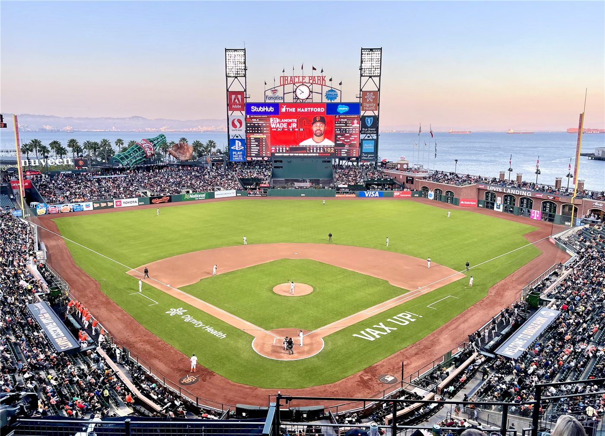
메이저리그에서 뛰는 이정후가 시즌 네 번째 홈런과 2타점으로 팀 승리를 이끌었다. 같은 날 김하성은 침묵했다.
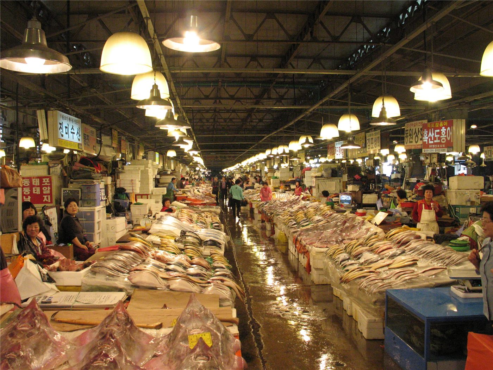
장바구니 물가가 부담스러운 시기에, 산지에서 곧바로 보내 주는 제철 수산물과 과일이 소비자의 관심을 끈다. 유통 단계를 줄여 가격을 낮춘 직거래가 대안으로 떠오른다.

중국 외교부, EU와의 경제·통상 관계는 상호이익이라며 보호무역 자제 촉구.

왕이 외교부장, 글로벌 거버넌스 개혁 방향 제시. 중국, 7월 세계 AI 회의 개최 예정.

상무부 집계, 서비스 교역 확대 지속. 디지털·관광·운송이 견인.

수출 증가폭이 둔화되며 흑자가 축소됐다. 대외 수요 약화 신호로 읽힌다.

중국이 동부와 서부 지역을 잇는 협력을 상시 업무로 다지며 지역 간 발전 격차를 줄이는 정책을 강조했다. 30년간 이어진 '민-닝 협력'의 경험을 전국으로 넓힌다는 구상이다.

중국이 저궤도 위성인터넷 구축을 위한 위성 22기를 한 번에 쏘아 올리는 데 성공했다. 위성 통신망 확충에 속도가 붙고 있다.

중국이 고용을 최우선에 두는 중장기 계획을 내놨다. 일자리 창출과 직업훈련, 노동시장 안정에 초점을 맞춘다.

중국 정부가 글로벌 거버넌스에 관한 백서를 내놨다. 외교부는 글로벌 거버넌스 이니셔티브가 협력의 실천 경로를 넓힌다고 밝혔다.
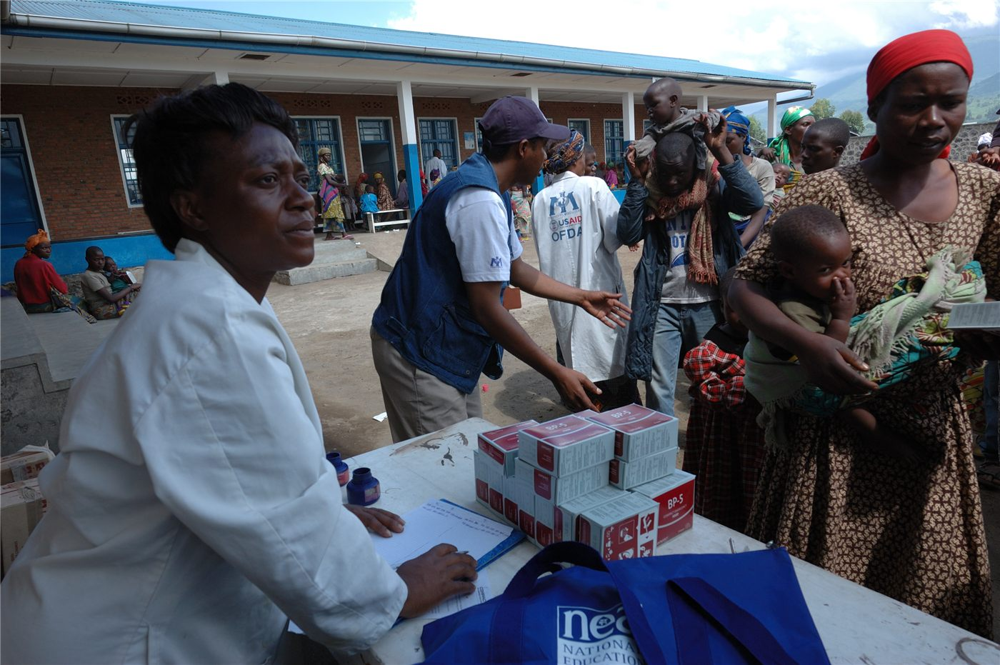
중국이 이란과 레바논에 새로운 인도주의 지원을 제공하기로 했다. 분쟁 이후 민생 회복을 돕는다는 취지다.

중국 한정 국가부주석이 미국의 전 운수장관 자오샤오란(일레인 차오)을 만났다. 양국 간 민간·경제 교류의 통로를 유지하려는 행보로 읽힌다.

제15회 베이징 국방정보화 장비·기술 박람회가 막을 올렸다. 통신·데이터·지능화 등 정보화 분야의 산업 전시가 펼쳐졌다.

여름 수확·파종·관리가 겹치는 '싼샤' 시기를 맞아 중국 곡창지대가 분주하다. 식량안보를 떠받치는 주요 농업성의 역할이 강조됐다.

중국 외교부가 경제와 과학기술 문제를 정치적으로 다루는 데 반대한다는 입장을 밝혔다. 통상·기술 협력은 호혜의 원칙을 따라야 한다는 취지다.

중국이 서비스업의 질적 발전을 새로운 성장 동력으로 키우겠다는 방향을 제시했다. 내수 확대와 고용 흡수의 핵심으로 꼽힌다.

취임 2년을 맞은 라이칭더 총통이 평화·안정과 민생을 국정 기조로 제시했다. 대만은 인재 유치 제도를 본격 시행 중이다.

해외 화인 청년의 취업·정착 문이 넓어졌다. 졸업생은 허가 없이 2년 근무, 전문인력은 1년 거주 후 영주 신청.

대만의 한 경제 부처 장관이 올해 경제성장률이 10%를 넘어설 수 있다고 밝혔다. 수출과 투자가 호조를 보인 데 따른 전망이지만, 기저효과와 외부 변수에 대한 신중론도 함께 나온다.

대만이 발주한 무기들이 올해 말까지 잇따라 인도될 것으로 전망된다. 국방 조달의 인도 일정이 빨라지는 모습이다.

대만이 여러 번 찾는 외국인 관광객에게 일정 금액을 돌려주는 포상 제도를 추진한다. 관광 수요 회복을 위한 유인책이다.
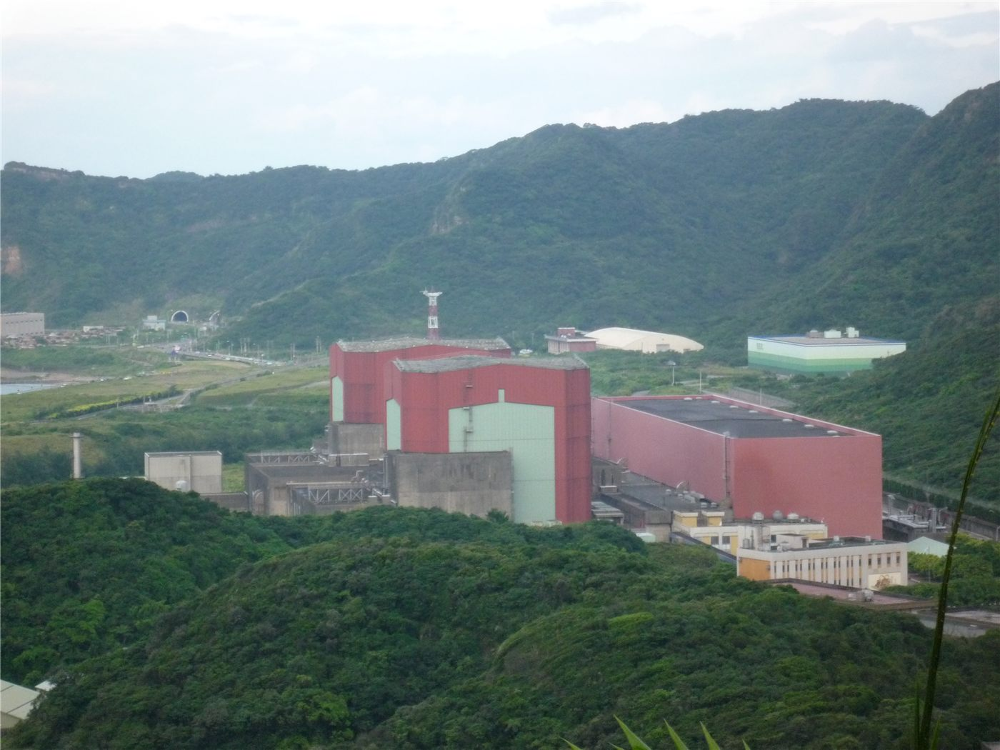
대만 제2원자력발전소에서 집단 수뢰 의혹이 불거져 정·부소장을 포함한 직원 5명이 검찰에 넘겨졌다. 공공시설의 청렴성 문제가 도마에 올랐다.
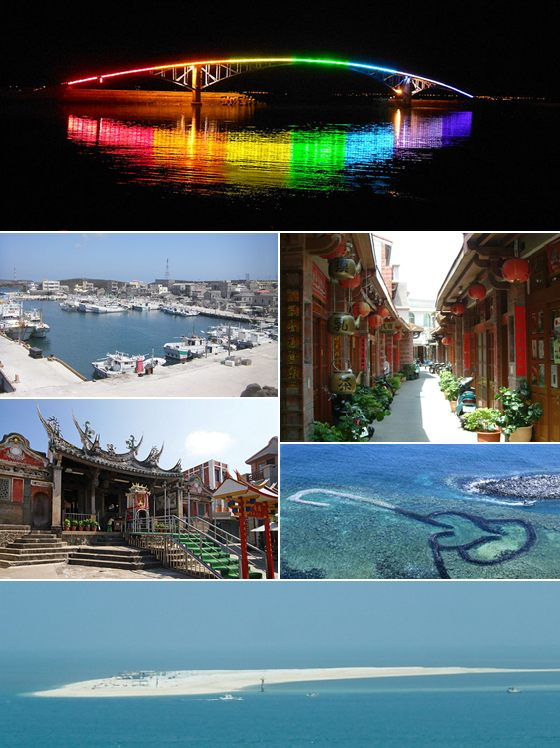
연말 지방선거를 앞두고 정당들의 공천 작업이 본격화하고 있다. 한 정당은 펑후(澎湖) 현장 후보로 새 인물을 내세웠다.

임무 중 순직한 비행관에게 대만 총통이 직접 포양령을 수여했다. 희생을 기리고 유가족을 예우하는 자리였다.

대만에서 간첩 혐의로 기소된 피고인이 1심에서 징역 12년을 선고받았다. 안보 관련 사건의 처리 추이가 주목된다.
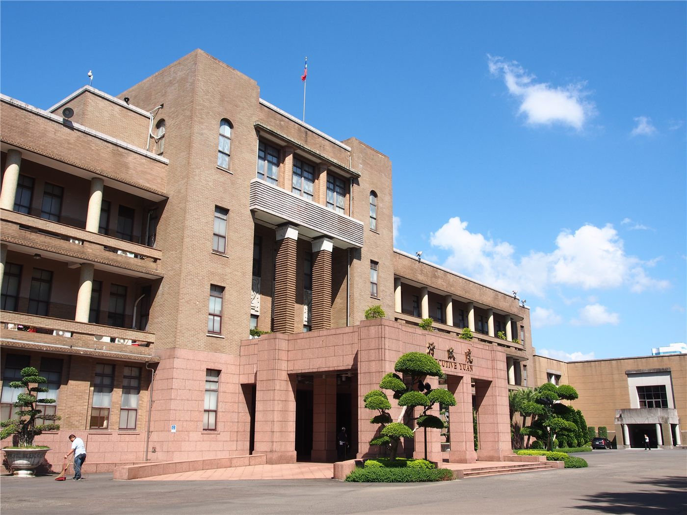
대만 대륙위원회가 운영하는 정보 제보용 웹사이트를 둘러싼 논란에 대해 당국이 적법한 운영이라는 입장을 밝혔다.

대만 남부 타이난에 첫 대형 가구점이 들어선다. 상권 활성화 기대와 함께 교통 혼잡을 우려하는 목소리가 함께 나온다.
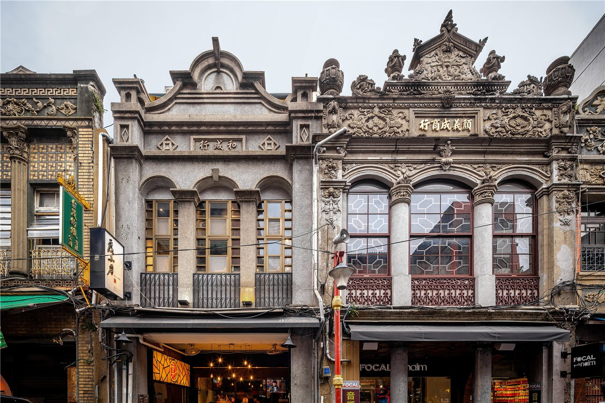
타이베이시가 오래된 주택에 엘리베이터를 다는 경우 주차 공간 확보 의무에 따른 대금을 면제하는 방안을 추진한다. 고령층의 이동권을 높이려는 취지다.

백악관이 국가정보국장 대행을 새로 지명하고, 법무부는 일부 정책 방향을 정리했다. 대외·통상 변수도 화인 경제에 파급.

EU 지도자들이 우크라이나 지원, 2028~2034 예산, 방위·이민을 의제로 올렸다. 올해 회원국 8곳이 총선을 치른다.

7일간 본토·카나리아 제도 순방.

그레이트니코바르 섬 항만·공항·신도시 계획.

케빈 워시 신임 의장이 주재한 첫 연방공개시장위원회(FOMC)에서 미국 기준금리가 3.5~3.75%로 동결됐다. 물가가 3년 만에 가장 높은 수준으로 치솟자, 위원 절반이 연내 '인하'가 아닌 '인상'을 예상하는 매파적 반전이 나왔다. 원화 약세에 시달리는 한국과 재한 화인 가계에 직접적인 파장이 예상된다.

미국이 이란과의 종전 양해각서(MOU) 초안을 공개했다. 이란이 60일 동안만 호르무즈 해협 통행료를 면제한다는 조항, 레바논에서의 이스라엘군 철수를 둘러싼 조건 등이 담겼다. 양국 정상이 이르면 18~19일 서명할 수 있다는 전망이 나온다.
이란 최고지도자였던 하메네이의 장례식이 사망 약 4개월 만에 치러진다. 이라크 방문 일정도 포함된 것으로 전해졌다.
핀란드가 오랫동안 유지해 온 핵무기 관련 금지를 해제하기로 했다. 지정학적 현실에 대응해 나토와의 협력을 깊게 하려는 행보다.

월드컵 조별리그 첫 경기에서 우승 후보 포르투갈이 콩고민주공화국과 1-1로 비겼다. 호날두는 득점에 실패했다.

미·중 정상회담 이후, 일부 미국 언론이 대만이 미국에 지나치게 의존하는 전략의 위험을 지적했다. 강대국 관계의 변화 속에서 중견 행위자의 셈법이 복잡해진다는 분석이다.
고령화가 앞선 일본에서 돌봄 인력 부족 등 '개호 위기'가 심화하고 있다. 여러 나라가 마주할 공통 과제의 거울이라는 분석이 나온다.

젊은 세대에서 연애·교제 등 친밀한 관계가 줄어드는 현상이 여러 나라에서 관찰된다. 초연결 시대에 나타나는 역설로 분석된다.
유럽연합이 가치 중심의 '규범 권력'에서 현실주의를 가미한 방향으로 이동하고 있다는 분석이 제기됐다. 다극화하는 세계 속 유럽의 자기 정의에 관한 논의다.

일본의 방위력 확대 흐름을 두고 다양한 평가가 나온다. 일부 평론은 주요국 협의가 이를 뒷받침한다고 보며, 역내에서는 경계의 시선도 제기된다.
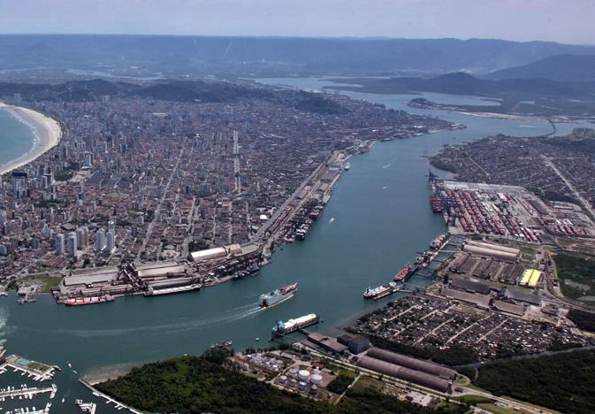
중국과 라틴아메리카의 협력이 질적 도약 단계에 들어섰다는 분석이 나왔다. 무역·투자·인프라에서 협력의 폭이 넓어지고 있다.
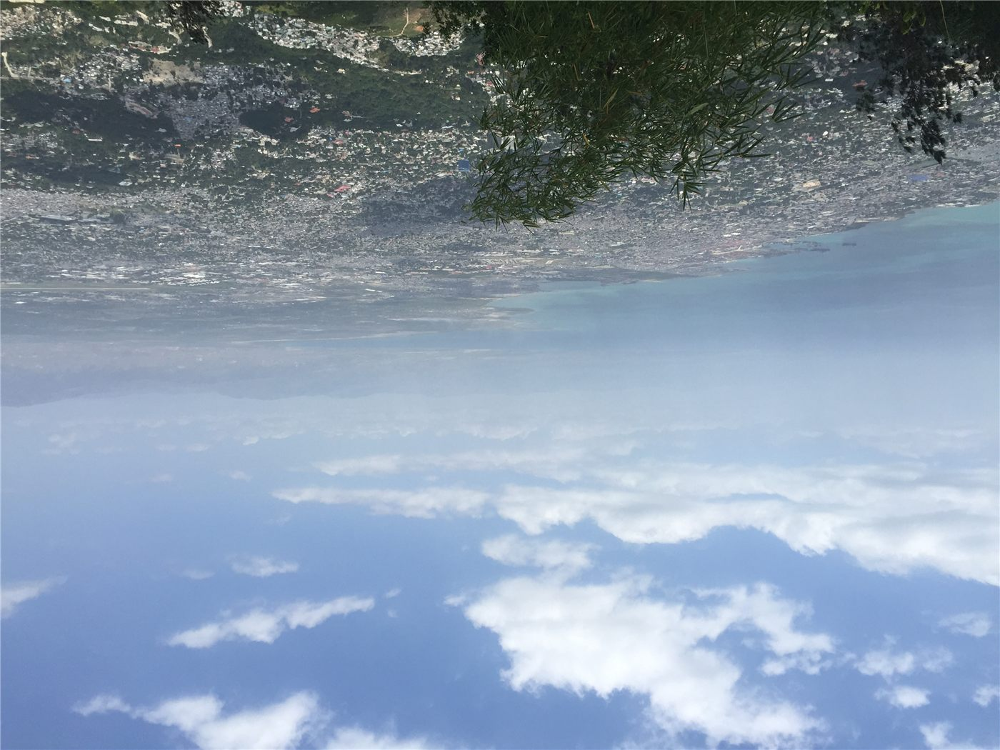
유엔 사무총장이 갱단 폭력이 이어지는 아이티를 방문했다. 새로운 '갱단 진압군' 배치를 앞둔 시점이다.

올해 대서양 허리케인 시즌의 첫 열대폭풍 '아서'가 텍사스 인근 멕시코만에서 형성됐다. 본격적인 폭풍 시즌의 시작을 알린다.
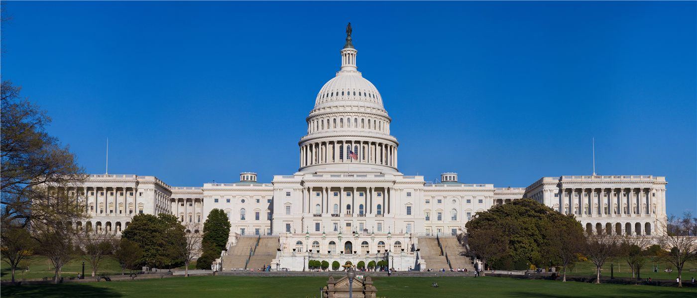
미국 상원이 정보기관 수장 후보의 인준 절차를 미뤘다. 인사를 둘러싼 정치적 진통이 이어지고 있다.

미국 FBI가 백악관 인근에서 열리는 대형 격투기(UFC) 행사를 겨냥한 폭발물 탑재 드론 공격 음모를 사전에 적발했다고 밝혔다.

졸업생 취업·영주 경로를 나란히. 화인 독자를 위한 실전 해설.

체류자격·기한·서류는 거주지와 자격별로 다르다. 미리 챙기면 불이익을 피할 수 있다.

인천화교협회가 여권 발급과 각종 인증 수수료의 인상을 예고했다. 행정 비용이 오르면 재한 화교 가정의 실생활 부담으로 직결돼, 미리 일정을 챙기라는 당부가 나온다.

부산화교중학(부산화교중고등학교)이 2026학년도(중화민국 115학년도) 신입생과 편입생 모집 공고를 냈다. 1차 접수는 7월 10일까지, 2차는 8월 10~14일이다.

인천화교 중산중학·소학이 개교 125주년을 맞아 교경(校慶) 행사를 열었다. 한 세기를 넘긴 화교 교육의 전통과 3개 언어·민속 교육의 성과가 한자리에 모였다.

한성화교협회가 봄철 교유대회를 열어 화교 동포 650여 명이 한자리에 모였다. 행사장은 온정과 친목의 열기로 가득했다.

인천화교협회가 영주권(F-5)을 가진 외국인의 체류카드(영주증) 10년 주기 갱신을 안내했다. 유효기간이 다가온 동포는 만료 전 갱신 신청을 해야 불이익을 피할 수 있다.

한성화교협회가 국경배 농구 토너먼트 개최를 공고하고 참가 팀을 모집한다.

원·달러 환율이 2009년 이후 최고로 치솟았다. 외국인 자금 이탈이 방아쇠를 당겼고, 본국에 돈을 보내는 화인 가정과 유학생이 가장 먼저 타격을 받는다. 정부는 '즉각 대응'을 예고했다.

달러뿐 아니라 유로 대비 원화도 약세. 유럽발 수입품과 여행 비용이 오른다.

대규모 자금 유출이 환율과 주가를 함께 끌어내렸다.

6월 11일 멕시코시티 개막, 7월 19일까지. 폭염 대비 규정 신설.

안전성·내약성 확인. 문어의 거울 사용도 관찰.

무척추동물의 거울 이용이 관찰돼 인지과학에 새로운 질문을 던졌다.

나이가 무색하게 정상급 경기력을 유지하는 메시를 두고, 전문가들이 그 비결을 분석했다. 경기 운영, 위치 선정, 동료 활용이라는 세 가지가 핵심으로 꼽혔다.

대만에서 방영을 시작한 청춘 드라마 '치샤'가 개봉과 동시에 큰 화제를 모으고 있다. 반항적 캐릭터를 연기한 배우의 호연이 입소문을 탔다.

대만에서 기자 10명이 한 방송사의 지방선거 보도를 검증하는 기획이 화제다. 보도의 정확성과 공정성을 동료 언론인들이 따져 본 시도다.

테슬라가 대만에서 '완전자율주행(FSD)' 기능의 심사를 신청했다. 7월부터 일시불 구매 방식은 중단될 것으로 예고됐다.

단오를 전후해 전해 내려오는 풍습과 금기가 다시 입길에 오른다. 과학적 근거보다 문화적 의미로 읽어야 할 이야기들이다.
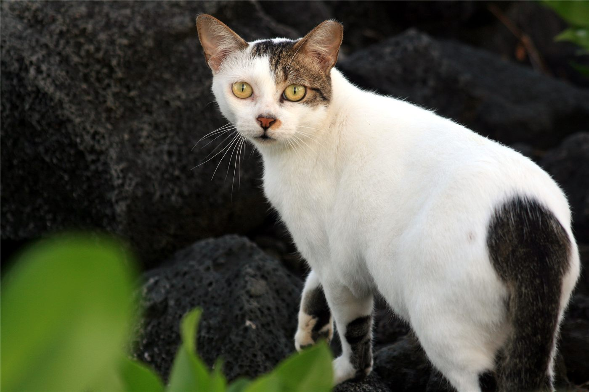
거리에서 고양이를 쓰다듬은 뒤 곧바로 휴대폰을 만지는 습관이 감염 위험을 키울 수 있다는 지적이 나왔다. 손 위생이라는 단순한 습관이 핵심이다.

1884년 인천화상조계 이래 140년. 인구는 8만에서 1만으로 줄었지만, 역사·문화 자산과 관광 가치는 오히려 커지고 있다.

첨단 신도시와 근현대 개항장의 공존. 해외 매체도 주목.

이중 언어·문화 강점. 무역·통번역·교육으로.

대만이 약물 운전과 음주측정 거부에 대해 면허를 취소하고 차량을 몰수하는 방향으로 법을 강화한다. 위험 운전에 대한 강력한 억지 신호다.

대만에서 전자담배가 학교 안으로 파고들며 청소년 흡연 문제가 커지고 있다. 관련 신고가 3년 사이 7배로 늘었다.

대만 정부가 기업의 직장 보육시설 설치를 위한 보조를 늘렸지만, 현장에서는 여전히 절차와 비용의 장벽이 크다는 지적이 나온다.

서울 잠실의 한 개표소 인근 시위 현장에서 30대가 자해 소동을 벌여 병원으로 옮겨졌다. 정치적 긴장이 개인의 위기로 번진 사례다.
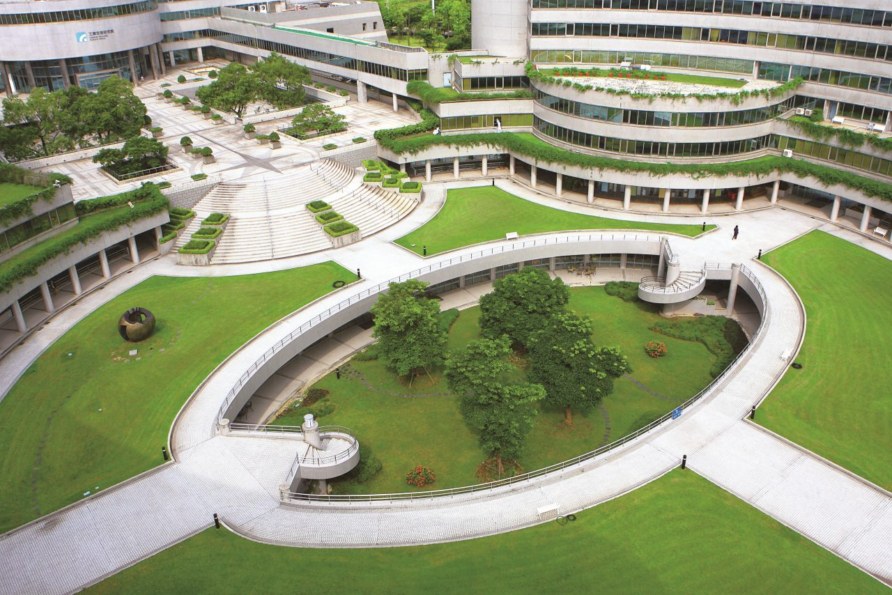
대만의 한 대표 연구기관이 직원의 가족 돌봄 부담을 덜어 주기 위해 주간 돌봄센터를 설치했다. 일하는 사람을 위한 복지의 새로운 시도다.

여러 언어를 자연스럽게 구사하는 다문화 가정 아이의 사례가 화제가 되며, 이중·다중 언어 양육에 대한 관심이 커지고 있다.